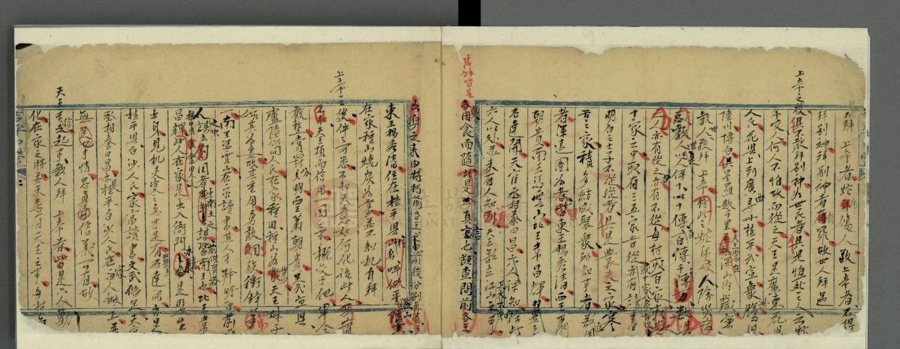
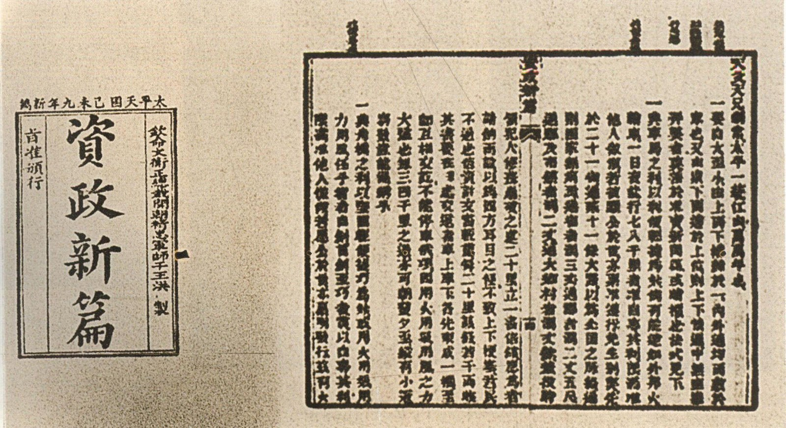
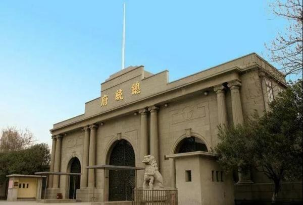
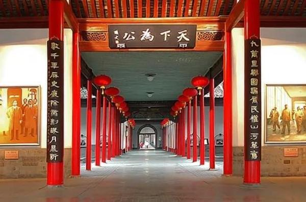
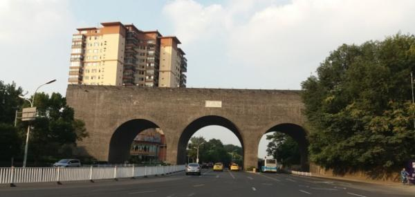
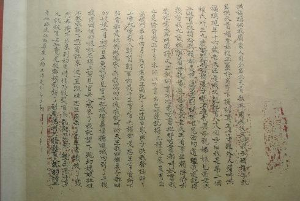
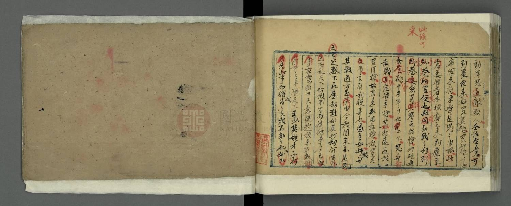
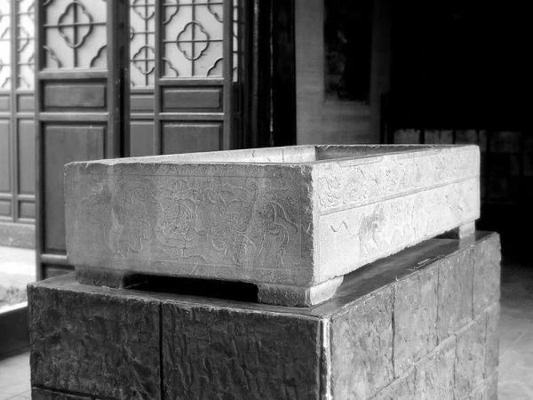

中国近代史 · 史料图像专题
洪秀全的末路
天京事变 · 腐化 · 陷落与死亡
当权力只剩神话，帝王的末路便从宫城内部开始。
1856 — 1864
天京 · 南京
由多份一手文书互证
各位老师、同学好。今天这一讲叫《洪秀全的末路》，讲的是 1856 到 1864 这八年：一个曾经把千万农民动员起来的政权，是怎么从内部垮掉的。
封面用的是后世追绘的《天京内讧图》，它只作叙事背景，不作为同时代的图像证据——这一点我后面还会再强调。
全篇走三条线：第一，天京事变如何摧毁了权力结构；第二，腐化如何耗尽了制度资源；第三，陷落与死亡如何由多份一手文书彼此印证、也彼此冲突。
故事的落点不是城破那一天，而是权力失去制衡的那一刻。
核心判断 · 全篇结构
末路并非始于城破
它始于权力失去制衡之后。
1856
天京事变
异姓诸王相继被清除，神权体系裂开——从此再也没有人能对天王的权力说“不”。
1859
批而不行
《资政新篇》获准颁行，却始终没有进入执行——制度只剩下“批准”的外观。
1864
城破与死亡
天堡城失守，太平门被炸开；而天王究竟是病死还是服毒，材料的说法从此分裂。
三个年份不是三件事，而是同一条下坡路上的三个刻度。
先给全篇一个判断：末路不是从 1864 年城破那天开始的。
1856 年的天京事变是政治转折点。破江南、江北大营之后，太平天国正处在军事上的高峰，可就在这几个月里，核心领导层几乎全灭。从制度上看，异姓诸王被清除之后，再没有任何力量能制衡天王。
1859 年的《资政新篇》显示另一种失效：方案被“旨准颁行”，却没有进入执行——授权符号和实际执行分离了。
1864 年才是军事和政治的总崩溃：天堡城失守，太平门被炸开，而洪秀全的死因也开始分裂成几种说法。
所以我请大家带着一个问题听后面的内容：权力一旦失去制衡，它会先坏在哪一环？
第一幕 · 转折
1856
天京事变
一场发生在胜利巅峰的内部屠杀
破江南、江北大营之后，太平天国的军事形势正处在最好的时候；而就在同一年，核心领导层在数月之内几乎全灭。
转折点
第一幕，1856 年，天京事变。
这一年太平天国在军事上正处在高峰：刚刚攻破清军的江南大营和江北大营，天京的包围解除了。可也是在这一年，领导层开始互相屠杀。
画面右侧是南京瞻园，原是东王杨秀清的王府所在地，今天建成了太平天国历史博物馆。
我这一页想强调的不是血腥，而是时间点：它发生在胜利的巅峰，而不是失败的谷底。这说明问题不出在敌人太强，而出在权力结构本身。
神权结构 · 事变的根源
谁能代表“天父”
名义上的最高权力，与实际的解释权发生冲突

李秀成亲笔供词 · 述诸王
杨秀清
“天父下凡”的传声筒
在人间代天训话
可以代天训斥天王
洪秀全的合法性依赖神话，杨秀清却掌握神话的即时解释权。
天京事变的根子，在神权结构里。
洪秀全的身份是“天父次子”，他的合法性来自神话。可是神话不能自己说话，得有人在人间替天父说话——这个人就是杨秀清。他借“天父下凡”的名义，可以当众训斥天王，甚至打天王的板子。
于是就出现一个死结：名义上的最高权力在洪秀全手里，而解释神话的即时权力在杨秀清手里。
左边的材料是李秀成亲笔供词中“述诸王”的部分。李秀成写杨秀清“权太重”，也记下了“逼封万岁”的说法。这里要说明分寸：逼封到底是否真有其事，学界一直有争议，所以这一页我只呈现制度矛盾，不去断定那件具体的事。
天京事变时间线 · 1856 — 1857
数月之内，核心层崩解
从诛杀东王，到逼走翼王——不到一年，最早起事的那批人只剩天王一个。
1856 · 9月2日
杨秀清及部属被杀韦昌辉奉召回京，东王府被血洗。
11月上旬
洪秀全诛韦昌辉屠杀扩大之后，天王转而处置执行者。
11月28日
秦日纲、陈承瑢被处死牵连者继续扩大，旧部人人自危。
1856年11月
石达开回京辅政唯一还有威望的异姓王回来收拾局面。
1857年5月
石达开离京出走辅政半年即被猜忌，带兵出走、另立旗号。
“逼封万岁”有争议，权力清洗造成的结构性后果没有争议——从此无人能与天王并肩。
这条时间线据文稿整理。
1856 年 9 月 2 日，韦昌辉奉召回京，诛杀杨秀清及其部属；11 月上旬，洪秀全反过来诛韦昌辉；11 月 28 日，秦日纲、陈承瑢被处死；同月，石达开回京辅政；到 1857 年 5 月，石达开也被猜忌，离京出走。
请注意这条线的方向：它不是“平定叛乱”，而是“清理自己人”。不到一年，当年一起起事的人只剩下洪秀全一个。
也说明一句史料边界：关于“逼封万岁”，张汝南、知非子、《石达开自述》和史式的观点互相冲突。我个人的判断是——无论那件事真假，清洗造成的结构性后果都是清楚的：从此天京没有第二个权力中心。
事变后的物证 · 天王玉玺
“八位万岁”
权力越流失，符号越加码
事变之后，洪秀全没有改革神权结构，而是继续给玺文、国号与身份增加神圣称谓。玺文里出现了“八位万岁”——这个数字把洪秀全的家族与上帝、耶稣排进了同一套神圣谱系。
“万岁”原本是最高权力的标志，在这里却变成了神权家庭内部的一种分配。
天王洪秀全玉玺 · 1864 年天京陷落时由湘军缴获 · 中国国家博物馆藏
事变之后，洪秀全拿什么来巩固权力？他选择的是继续加码符号。
这方玉玺 1864 年天京陷落时被湘军缴获，今天藏在中国国家博物馆。玺文里有“八位万岁”这样的字样。
“万岁”这两个字，在传统政治里是最高权力的标志，只有皇帝一个人能用。可在这方玺上，它变成了一个可以分配给神权家庭的称谓——洪秀全自己、他的儿子、天父、天兄，都在这套谱系里。
所以这一页的判断是：权力越流失，符号越加码。当制度约束不了人，神话就被反复加粗。这枚印章就是最直接的物证。
第二幕
腐化
宫殿 · 圣库 · 后宫
制约者消失之后，制度只剩“批准”的外观，资源则流向宫城与王府。
第二幕的问题
天国的“公”，如何变成帝王的“私”？
第二幕讲腐化。这里的腐化不是指某个人贪了多少钱，而是指整个资源分配的走向变了。
画面上这张图是 1864 年西方画刊里的天王府正门。关于它出自法国画刊还是英国《伦敦新闻画报》，两种图注说法打架，我在图注里保留了“出处存疑”的说明。
天京事变之后，能制约天王的力量没有了。制度只剩下“批准”的外观：文件照样颁行，事情照样不办。与此同时，人力物力开始往宫城和王府里流。
这一幕要回答的问题就是这一句：天国的“公”，是怎么一步步变成帝王的“私”的？
制度能力 · 1859
“旨准颁行”与“未见一谋”

《资政新篇》1859 年原刻本首页
旨准颁行
洪秀全给了方案一个充分的合法性外观——钦定、颁行。
未见一谋
李秀成供词对这整套方案执行结果的五个字判断。
一份被“批准”的改革方案，和一套不运转的执行系统——这就是制度失效的样子。
1859 年，洪仁玕从香港来到天京，很快被封为干王，提出了《资政新篇》。这份方案在当时非常超前：办报纸、开矿、修铁路、设银行、讲法治，都是近代化的路子。
洪秀全的态度看起来很支持——他“旨准颁行”，等于给了方案最高的合法性。
但李秀成在供词里写下五个字：“未见一谋”。方案是颁行了，却几乎没有一条真正落地。
所以这一页用两份材料对照：一份给的是许可，一份给的是结果。合在一起看，就是“批而不行”。当一个政权的批准与执行分离，它就已经失去了自我更新的能力。


同一处地址 · 南京长江路 292 号
同一张椅子 · 一处地址的四个名字
- 明王府明初汉王府的一部分
- 清两江总督衙署清代江南最高军政机关
- 太平天国天王府1853 — 1864 · 洪秀全的宫城
- 民国总统府1912 年以后，同一片基址
他争夺的不是一座新世界，而是旧秩序里的最高位置。
图注：左为总统府大门，右为总统府大堂（金龙殿基址所在）。同一地点先后是明王府、清两江总督衙署、太平天国天王府与民国总统府。
这一页我想请大家看一个具体的地点：南京长江路 292 号。
明朝初年，这里是汉王府的一部分；清代，这里是两江总督衙署，江南最高的军政机关；1853 年太平军进入南京，洪秀全把这里改建为天王府；1912 年以后，这里又成了民国总统府。
四个名字，同一块地基。左边是总统府大门，右边是大堂，也就是天王府金龙殿的基址所在。
所以我这一页的结论是：他争夺的不是一座新世界，而是旧秩序里的最高位置。位置换了几任主人，椅子还是那张椅子。这是理解太平天国局限性的一个很直观的入口。
圣库制度 · 制度的两面
“物物归上主”之后，谁在支配资源
圣库制度是太平天国最有名的一项制度设计：财产归公，按需分配，口号是“物物归上主”“天下人人不受私”。在起事阶段，它确实起到了集中资源、维持军队的作用。
但定都天京之后，这套制度慢慢变了味。诸王大兴土木、营造王府，过奢侈生活，钱从哪里来？还是从圣库来。
画面上这块木牌是圣库看守的指令牌。它告诉我们这套制度曾经有非常严格的管理规定；可制度越严格，越说明它需要防着人。
所以这一页只用八个字概括：公有制承诺，私有制享受。同一个库房，前期养的是军队，后期养的是王府。
第三幕 · 陷落
1864
天京陷落
当紫金山上的天堡城失守，整座天京暴露在清军的视野之下——城墙再厚，也挡不住居高临下的炮火。
1853 — 1864
一块文保碑，恰好写尽天国在南京的全部国祚。
第三幕，1864 年，天京陷落。
军事上的最后一道门是紫金山上的天堡城。它 1853 年修筑，1864 年 2 月 28 日失守。这座堡垒和山脚下的地堡城互为犄角，是拱卫天京的重要据点。它一丢，整座城就暴露在清军居高临下的视野和炮火里。
天京从 1853 年定都到 1864 年陷落，一共十一年。画面的文保碑上写着的，恰好就是这个政权的全部国祚。
这一页之后，我们就要进入全篇最关键的一段：城是怎么破的，天王是怎么死的，以及为什么不同的材料会给出不同的答案。

“曾帅用火攻倒京城，由紫金山龙颈而破。”
李秀成亲笔供词
午后，湘军由太平门方向突破。天京陷落。
城破 · 1864 年 7 月 19 日
太平门外，火药炸开城墙
1864 年 7 月 19 日午后，湘军炸开太平门方向的城墙，天京陷落。画面上是今天的南京太平门，门外的地名叫龙脖子、龙颈。
引文出自李秀成亲笔供词：“是午时之后，曾帅用火攻倒京城，由紫金山龙颈而破，全军入城，我军不能为敌。”注意，这是太平天国自己人被俘之后写下的记录。
到这里，军事上的故事结束了。但真正难讲的是接下来这几天：天王府里发生了什么，洪秀全究竟是怎么死的。
因为不同的材料给出的答案并不一样——这就把我们带到全篇最需要“史料意识”的地方。
死亡公案 · 材料对质
病死，还是服毒
同一件事，三份文书给出了两种答案。
文书 甲
李秀成亲笔稿本
病死
“不肯食药方。”
天王病重之后拒绝服药，四月二十一日去世。
亲笔稿本 · 供词系统
文书 乙
曾国藩删改刻本
服毒
“服毒而亡。”
日期记作四月二十七日。
删改刻本 · 上呈系统
文书 丙
洪天贵福亲书
病死
四月十九日夜四更去世。
“病症不知。”
幼天王自述 · 亲书
曾国藩的奏折也写“服毒”，但它明确注明来自“城内各贼供称”，而且前后日期互相矛盾。文稿采用病死说，同时保留这场争议。
洪秀全到底是怎么死的？这不是一个可以随口回答的问题，因为材料本身就分裂。
第一份，李秀成的亲笔稿本，写他病重之后“不肯食药方”，也就是拒绝吃药，四月二十一日去世，属于病死。第二份，曾国藩的删改刻本，改成了“服毒而亡”，日期也挪到四月二十七日。第三份，幼天王洪天贵福亲笔自述，说父亲四月十九日夜四更去世，至于病症，他写的是“不知”。
还有一份材料是曾国藩的奏折，也写“服毒”，但它明确注明来自“城内各贼供称”，而且前后日期互相矛盾。
所以这一页我采用病死说，同时保留争议：文本一旦被删改，就会改变结论。这也提醒我们——被俘者写的供词和上呈朝廷的刻本，不一定是同一份材料。
互证 · 本讲最坚实的一处证据链
敌我文书在这里相遇

洪天贵福亲书自述 · 第二页
洪天贵福 · 幼天王自述
“不用棺木，是使女官葬的。”
曾国藩奏折 · 验尸记录
尸身以绣龙黄缎包裹，未用棺木。
两套敌对文书彼此印证，构成全篇最坚实的一处证据链。
前面几份材料互相打架，但有一处材料，敌我双方的说法是对得上的，这就是全篇最坚实的一处证据链。
一边是洪秀全的儿子、幼天王洪天贵福亲笔写的自述，他说父亲下葬时“不用棺木，是使女官葬的”。另一边是曾国藩的奏折，里面记下了验尸的结果：尸身用绣龙黄缎包裹，没有用棺木。
一方是太平天国自己人，一方是消灭他们的清朝统帅，两边互不相干，却在“没有用棺木”这个细节上对上了。
这就是史学研究里最重要的方法之一：互证。当敌对双方的记录在细节上吻合，我们对这件事的判断就可以比只信一边更有底气。清方要验明正身，洪天贵福要说明安葬情形，两种动机不同的记述指向同一个事实。

李秀成亲笔供词 · 末页
“……实我不知知也，
如知……”
纸尽。
次日，李秀成被杀。
一份数万字的自述，最后停在一句没有写完的话上。
这是李秀成亲笔供词的末页。
一部长达数万字的自述，最后停在一句没有写完的话上：“……实我不知知也，如知……”纸不够了，话也就断在那里。第二天，也就是 1864 年 8 月 7 日，李秀成被杀。
我想让大家体会这个瞬间：这不是一份从容的回忆录，而是一个人被囚在笼子里，一边写一边被催促留下的最后文字。它既是史料的来源，本身也是一件残留着仓促痕迹的文物。
太平天国的故事，最后就停在这样一句没写完的话上。接下来还有一个人——幼天王洪天贵福，他要为这个名号再死一次。
尾声 · 1864 年的四天与五个月
末路的终点，不在天王府
而在南昌刑场
清廷要终结的不只是一个十六岁的孩子，而是“洪秀全”这个仍然能够召集反抗的名号。
这一段我想把最后几个日期摆在一起看。
1864 年 6 月 1 日洪秀全死；6 月 6 日，他十六岁的儿子洪天贵福登极，称为幼天王；7 月 19 日天京陷落，幼天王在乱军中逃出；11 月 18 日，他在南昌被凌迟处死。
画面背景是洪天贵福亲笔自述的首页，原件藏在台北故宫博物院文献馆。一个十六岁的孩子，被要求在供词里回答父亲的事、朝廷的事、天国的事。
所以这一页的判断是：清廷要终结的不只是一个孩子，而是“洪秀全”这个仍然能够召集反抗的名号。人可以被杀掉，名号必须被处理掉——这才是“末路”的最后一步。
结论 · 一个帝王的末路
他把全部权力，押在一个符号系统上
- 01
权力结构：神权解释权的冲突，引爆了内部清洗；事变之后，再没有人能制衡天王。
- 02
制度能力：批准代替执行，规则让位于身份——《资政新篇》“旨准颁行”却“未见一谋”。
- 03
资源分配：圣库承诺公共，宫殿兑现特权；天国的“公”变成了帝王的“私”。
- 04
历史证据：手稿、奏折、遗址彼此校验，也彼此冲突——这正是判断这段历史的方式。

天王府旧址 · 石基座
符号越神圣，现实越脆弱。
材料边界：评价洪秀全，不能只信太平天国的宣传，也不能只信曾国藩一方的说法。把他自己的文本、同时代人的记录和后人的研究放在一起看，才是讲这段历史应有的分寸。
一个推翻了旧王朝的人，最后坐上了同一把椅子。
最后把全篇收在一句话上：他把全部权力，押在一个符号系统上。
第一，权力结构上，神权解释权的冲突引爆了内部清洗。事变之后，再没有人能制衡天王。
第二，制度能力上，批准代替了执行，规则让位于身份。《资政新篇》被“旨准颁行”，结果是“未见一谋”。
第三，资源分配上，圣库承诺的是公共，宫殿兑现的是特权。天国的“公”变成了帝王的“私”。
第四，也是我特别想留给大家的：这一段历史的证据本身是分裂的。手稿、奏折、遗址互相校验，也互相冲突。评价洪秀全，不能只信太平天国的宣传，也不能只信曾国藩一方的说法——两边都放在一起，我们才可能靠近一点真相。
所以我的结论是：他推翻了旧王朝，最后坐上了同一把椅子。这就是一个帝王的末路。谢谢大家。